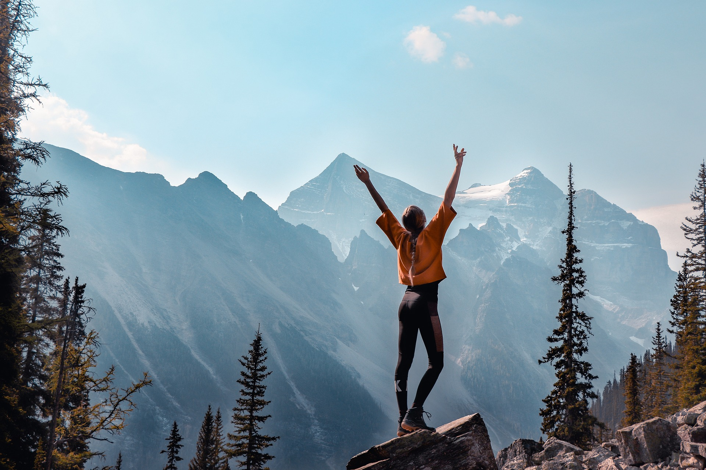

Hiking is a recreational activity--walking in nature. Hiking is a natural exercise that promotes physical fitness, is economical and convenient, and requires no special equipment. Because hikers can walk as far as they want, there is no physical strain unless they walk among hills or mountains.
Hiking is basic to many sporting activities and is also a widely recommended and practiced form of physical training. For example, hiking constitutes a large part of mountain climbing; experienced mountaineers know that they must train themselves for the long, arduous hikes over the lower trails and across glaciers and snowfields. Backpack camping, hunting, cross-country skiing and snowshoeing, and orienteering are other sports and sporting activities in which hiking is important. The ability to walk considerable distances without becoming overtired (an ability generally acquired through practice) also enhances the enjoyment of such other activities as bird-watching, nature walks, field trips of all sorts, and even sightseeing.
Many people walk alone, mainly on weekends or holidays, but youth clubs and other groups arrange hikes. The normal length of the walk undertaken is 7 to 12 miles (11 to 19 km) for a half day or 12 to 20 miles (19 to 32 km) for a full day. Those organized rambles, combining exercise with enjoyment of the countryside, are in country districts surrounding large towns and follow a planned route. Most densely populated European towns have hiking trails outside them.
Source: https://www.britannica.com/sports/hiking